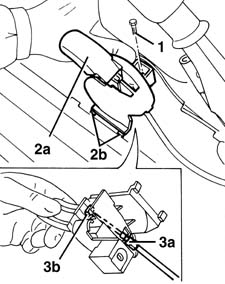
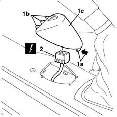
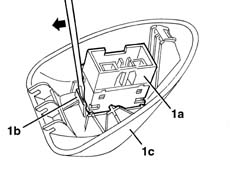

7015B42 TAILGATE OPENING INTERIOR CONTROL - R+R
- Path
- Procedures > 70 FITTINGS > 7015 TAILGATE/FLAP > 7015B TAILGATE LOCKING/OPENING DEVICES > 7015B42 TAILGATE OPENING INTERIOR CONTROL - R+R
- Kind
- repair procedure (removal / refitting; the operation number is the code)
- Applies to
- all engines; all production periods
- Interactive page
- https://sloeber94.github.io/elrnDB-fMltpl/en/#/2892124
Applies to: all engines; production: fino a 05/99, da 06/99 a 03/02
 Removing
Removing
 Refitting
Refitting3380A44 handbrake/linkage protection - r+r
.
7040L40 front compartment scuff strip - r r
Connect the electrical connections.
1. Undo the bolt.
2. Release the opening control (2a) from its retainers (2b) and move it aside.
3. Disconnect the cable from the retainers (3a) and (3b).
Recover the opening control.

Applies to: all engines; production: fino a 05/99, da 06/99 a 03/02
Refitting
RemovingCheck that the opening control is not damaged.
Connect the control cable to the retainers.
Fit the opening control in its seating.
Tighten the bolt.
7040L40 front compartment scuff strip - r r
Connect the electrical connections.
3380A44 handbrake/linkage protection - r+r
.
Check that the opening control works properly.
Applies to: all engines; production: da 09/03, da 04/02 a 08/03, da 06/04, fino a 05/04
Removing
RefittingOpen the left front door.
1. Release the rear retainer (1a), then the front retainer (1b) and move the trim and switch (1c) slightly.
2. Disconnect the electrical connection.
 | Name | Connector |
|---|---|---|
2 | Boot opening switch |

Applies to: all engines; production: da 09/03, da 04/02 a 08/03, da 06/04, fino a 05/04
1. If necessary, release the switch (1a) from the trim (1c) retainer (1b) using a screwdriver and remove it.

Applies to: all engines; production: da 09/03, da 04/02 a 08/03, da 06/04, fino a 05/04
Refitting
RemovingCheck that the switch is not damaged.
If removed, fit the switch in place and attach it to the retainer.
Connect the electrical connection to the switch.
Place the trim and switch in position and attach it to the retainer.
Check that the switch is working.